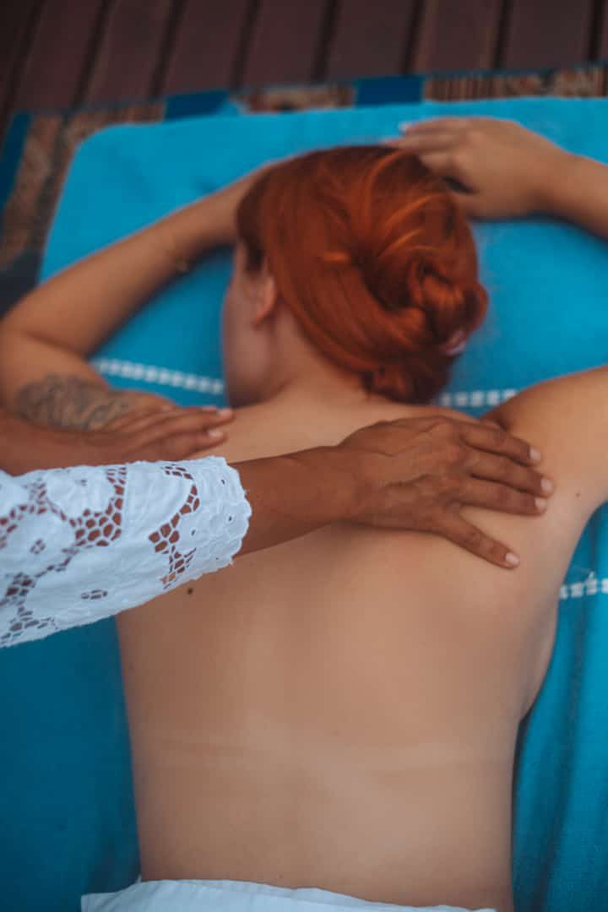

MASSAGEM & ACUPUNTURA
Alana Daniele
Graduada em Shiatsu Koho-Igaku e Acupuntura Tradicional Chinesa
Colégio Brasileiro de Acupuntura-CBA-ABACO-2008

+20 anos de estudo sobre porque adoecemos e como podemos nos curar
+ de 16 anos de experiência
+6 mil atendimentos
Experiência em cuidados de saúde eficazes nas afecções físicas, distúrbios orgânicos, desordens
mentais e psicossomáticas, condições específicas dos homens, mulheres e crianças, problemas oriundos do
tratamento de câncer, cirurgias e dependência química; atuando nos sinais e sintomas e na raiz do desequilíbrio
físico e energético com diagnóstico oriental específico de pulso e língua com base na medicina tradicional
chinesa.
Formações Profissionais